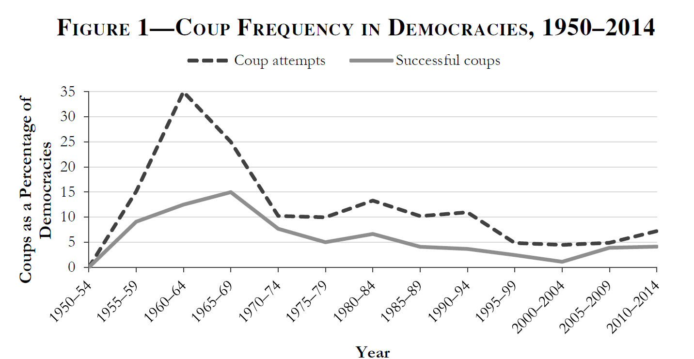
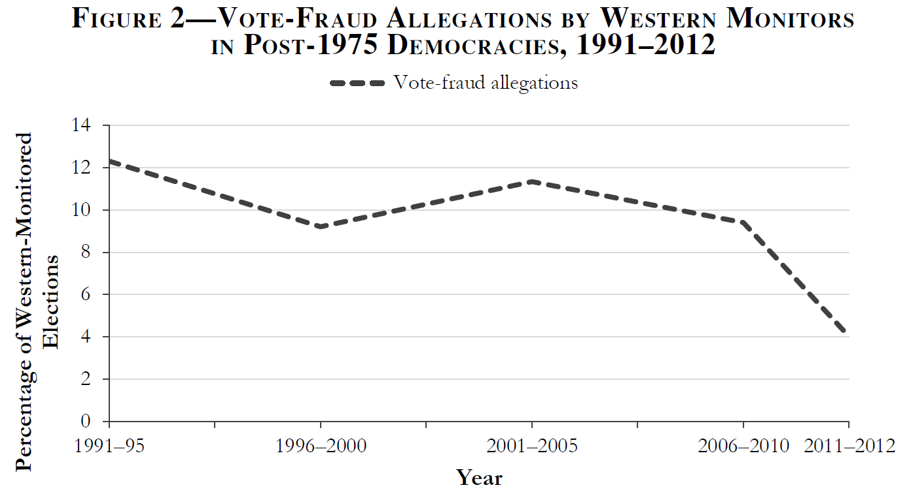

What is Democratic Backsliding?
The Politics of Democratic Backsliding
Session 03
University of Lucerne
Introduction
This session’s goals
- Situate democratic backsliding in historical perspective
- Situate democratic backsliding in the autocratization literature
- Identify the idiosyncratic characteristics of democratic backsliding
- Set up the analytical framework for the rest of the course
The context of democratic backsliding
Democratization in waves
Huntington (1991) identifies three waves of democratization
The first wave (1828–1926): gradual suffrage expansion in the West
- USA, France, UK, Argentina, Switzerland, etc.
The second wave (1945–1962): Allied victory in WWII, decolonisation, Cold War
- Italy, Japan, India, West Germany, etc.
The third wave (1974- 1990s): breakdown authoritarian regimes in Europe and the Americas, end of the COld War
- Portugal, Spain, Brazil, Poland, etc.
The third wave of democratization
- It started in Southern Europe (Portugal 1974, Greece 1974, Spain 1975)
- Spread through Latin America in the 1980s and ended with the fall of the communism in Eastern Europe after 1989
- By the mid-1990s, for the first time in history, more than half of all countries qualified as democratic
But the wave did not always produce uniformly consolidated democracies
Hybrid regimes
The third wave gave rise to regimes that were neither fully democratic nor clearly authoritarian
- Competitive authoritarianism (Levitsky & Way, 2002): elections exist but playing field is heavily skewed in favour of incumbents (e.g., Russia 1990s-2000s)
- Electoral authoritarianism (Schedler, 2006): multiparty elections are held but are not genuinely competitive (e.g., Mexico’s PRI-era)
- Illiberal democracy (Zakaria, 1997): elections are free and fair but civil liberties and rule of law are weak (e.g., Hungary post-2010)
- Delegative democracy (O’Donnell, 1994): elected presidents govern with few horizontal accountability constraints (e.g., Menem’s Argentina)
How do hybrid regimes fit our definition?
Dahl
Polyarchies are political systems where contestation and participation are institutionally guaranteed
Przeworski
Democracies are political systems in which parties lose elections and alternation is possible

Hybrid regimes and democratic backsliding
The emergence of hybrid regimes opens a conceptual space between liberal democracy and classic autocracy
Not all regimes can be clearly distinguished as autocracies or democracies, gradients exist
That means autocratization does not need to be a sudden regime change; it can take subtle and gradual forms
Autocratization and backsliding
The autocratization waves
Together with the democratization waves, Huntington identifies two periods of democratic reversal (or autocratization)
- The first reversal (1922–1942): rise of fascism and authoritarianism, foreign invasions
- Germany, Italy, Spain, Austria, Japan, etc.
- The second reversal (1960–1975): Cold War military coups, especially in the Global South
- Brazil, Argentina, Ghana, Pakistan, etc.
Both waves were dominated by sudden, illegal power grabs
A third autocratization wave?
Today’s debate focuses on whether we are witnessing a third period of democratic reversal
Empirical studies already point toward this possibility (e.g., Lührmann & Lindberg, 2019)
However, a discussion exists, motivated because contemporary autocratization looks different from the past:
We no longer witness the sudden regime changes that characterized the former reversal periods
Instead, it is argued that we are in a period of gradual, subtle, and state-led democratic debilitation
Autocratization
Following Lührmann & Lindberg (2019), autocratization is the substantial decline of democratic regime attributes
It contrasts democratization, understood as the reverse process: any substantial move toward democracy
Three autocratization subtypes, depending on starting point and endpoint:
Democratic recession
Decline within a democracy, loses qualities but remains formally democratic
Democratic breakdown
A democracy crosses the threshold into autocracy
Autocratic consolidation
Decline within an already-autocratic regime
Traditional forms of autocratization
Traditional forms of autocratization focus on sudden ruptures to democracy, leading to regime change, i.e. democratic breakdown
Bermeo (2016) identifies three classic forms of autocratization:
Classic coups d’état
Illegal military ouster of elected government; open-ended seizure of power
Executive coups (autogolpes)
Elected executive suspends the constitution to concentrate power in one swift move
Election-day vote fraud
Blatant manipulation of polling-day process: ballot stuffing, count falsification, station-level fraud
Classic coups d’état
Illegal attempts by military or state elites to oust a sitting executive
- Hallmark of Cold War autocratization; generated long-lasting, brutal dictatorships
The probability of a successful coup reached near-zero in the early 2000s
- International community now sanctions coup-makers; aid conditionality; norms against illegal power transfer

Bermeo (2016)
Executive coups (autogolpes)
An elected executive suspends the constitution; concentrates power in one sudden move
- Five executive coups in democracies during the 1990s alone (e.g. Peru 1992)
- The elected executive retains office but transforms the regime: legislative suspension, emergency decrees, constitutional replacement
Only Niger (2010) between 2000 and 2013
Election-day vote fraud
Blatant manipulation on polling day: ballot stuffing, count falsification, station-level fraud
Near-consensus that open, visible fraud has declined since the 1990s
- Rise of international election monitoring made obvious fraud more costly

Bermeo (2016)
What is different now?
Autocratization today largely operates through apparently legal or even pro-democratic channels
Three key features that distinguish it from older forms:
State-led: incumbents, not militaries or outside forces, drive the process
Incremental: changes accumulate piece by piece; no single dramatic rupture
Legitimated: each step can be defended as lawful, democratic, or in the public interest
Promissory coups
Coups that frame the ouster as a defence of democracy, promising elections and restoration
Today: 85% of successful coups are promissory (up from 35% before 1990)
- The promise is almost never kept in full: few promissory coups were followed quickly by competitive elections
- Post-coup elections tend to favour coup-makers or their allies
Executive aggrandizement
Elected executives weaken checks on executive power one by one through legal channels
- Institutional changes are voted on, decreed, or passed by legislature, often framed as having democratic mandate
- Key targets inlcude the courts, media, electoral commissions and civil society
Each change, taken alone, might be defensible it is the cumulative pattern that reveals the intent
Strategic electoral manipulation
Actions that tilt the electoral playing field without producing obvious fraud on polling day
- Hampering media access, misusing public funds for incumbents, keeping opposition off ballots, etc.
- It differs from election-day fraud because it occurs long before polling day and rarely violates the letter of the law
It is partly a consequence of better election monitoring; politicians shifted manipulation earlier in the cycle
New vs. old forms of autocratization
| Old form | New form | Key difference |
|---|---|---|
| Classic coup d’état | Promissory coup | Framed as democratic restoration; promises elections |
| Executive coup (autogolpe) | Executive aggrandizement | Gradual and legal; no single constitutional rupture |
| Election-day vote fraud | Strategic electoral manipulation | Moves before polling day; rarely violates the letter of the law |
What is then democratic backsliding?
Democratic backsliding is a contested concept…
Bermeo (2016): “state-led debilitation or elimination of any of the political institutions that sustain an existing democracy”
Waldner & Lust (2018): “deterioration of qualities associated with democratic governance, within any regime”
Lührmann & Lindberg (2019): prefers to talk of democratic erosion as a state-led form of democratic recession that happens subtly an incrementally
Democratic backsliding
But there are some points of agreement:
- It is state-led: driven by incumbents, not opposition or civil society
- It operates through legal channels: it uses and abuses existing rules and institutions
- It is incremental: a process, not a single event
Questions and debates
The extent of democratic backsliding
Backsliding is difficult to measure: gradual and incremental
Efforts are growing, but the debate is ongoing
- How many countries are really affected?
- How severe is the decline?
Session 12
The Breadth of Backsliding
The consequences of democratic backsliding also remains unclear:
- How likely is it to lead to democratic breakdown?
- How likely is it to result in hybrid regimes?
- Is reversal possible? Can be contained or resisted?
Session 13
The Politics of Backsliding
To answer the previous questions, it is first necessary to understand how and why democratic backsliding occurs in the first place
- What are the mechanisms through which leaders erode democracy?
- What conditions enable backsliding?
Sessions 4 to 11
Our analytical framework
Supply side (Elites)
Mechanisms
Horizontal
accountability
(S04)
Vertical
accountability
(S05)
Conditions
Democratic
norms
(S06)
Populism &
parties
(S07)
⇄
Demand side (Citizens)
Mechanisms
Support for
democracy
(S08)
Democratic
hypocrisy
(S09)
Conditions
Structural
factors
(S10)
Media
environment
(S11)
The case studies
The goal is to apply this theoretical framework to a specific country’s backsliding episode
- Connect theoretical mechanisms to empirical cases
- Observe variation: not all backsliding looks the same
- Identify gaps: where does the theory not fit?
Conclusion
Democratic backsliding: a new phenomenon?
Autocratization exists since demcoracies appeared
What is new about democratic backsliding:
- It is state-led
- It has a legal façade
- It is subtle and incremental
The international context
Democracy has become the global most legitimate form of government since 1989
International monitoring and aid conditionality reduced blatant fraud and coups but created incentives to shift to subtler forms
Backsliding is, paradoxically, evidence of democracy promotion’s partial success
How long does a wave last?
According to Lührmann & Lindberg (2019):
- First wave of autocratisation: approximately 16 years (1926–1942)
- Second wave: approximately 16 years (1961–1977)
- Third wave: began in 1994; already over 30 years ago 🤔
Is this a wave or a new equilibrium? What would “recovery” look like?
Class activity
Pair up and discuss:
Based on what we have reviewed today, where do you see democratic backsliding going globally?
- What gives you reason to expect more backsliding or breakdown?
- What gives you reason to expect recovery?
- Come up with a shared position and argument
Next block (13.03.2026)
Block II: The Supply-Side of Democratic Backsliding
Session 04: Weakening Horizontal Accountability
Session 05: Weakening Vertical Accountability
Sessions 06: Weakening Democratic Norms
Sessions 07: Populism and the Weakening of ‘Party Democracy’
Thanks! 🙂

Hauptseminar - Spring Term 2026